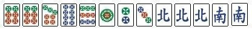

Welcome to a very short introduction to Riichi Mahjong (Japanese Mahjong).
Or just go play Riichi City or Mahjong Soul or other random website. :)
To the left is Japanese hirgana A. I don't know much, but yea.
Tiles
- Manzu (Man, Characters, Cracks)
- Pinzu (Pin, Circles, Dots)
- Souzu (Sou, Bamboo, Sticks)
- Winds (E,S,W,N)
- Dragons (Green,Red,White)

Above is 1 possible sequence from man, pin, and sou respectively.
Each has tiles numbered 1-9
Above are 4 different types of wind tiles. They are north, east, south, and west respectively.
There is something called a hand.
This hand is what you start with at the beginning of each game and build throughout the game.
You start with 13 tiles. At each player's turn, they will draw one tile from the
wall (which is made during preparation stage to start the game)
The goal is 4 of any sets (sequence, triplets) and one pair of anything.
This is where you get 14 tiles in total to win.
(With Math, it's 3+3+3+3+2 = 14)
The Mahjong Guide
Image source: eventbrite: Riichi Mahjong Learn-and-Play
GitHub for tile images
These (Below) are red, green, and white tiles.
They are in a set called kan, or four of a kind.
There are four different calls to help complete their set or entire hand. However, this can only be called (Kan can be called from your hand or discarded tiles) on discarded tiles by other players.
- Chii: This is a call used to take a discard tiles from the player on your left.
- Pon:This call is to complete a triplet by taking a just discard tiles from any player
- Kan:This is to complete a kan, or 4 tiles of same kind. This can be called from you hand if you happen to have 4 of them. Or a tile from a just discarded tile. You can also call it to meld a triplet that you called, making a kan, if you happen to draw it
- Ron:Ron is called if you have a tenpai (Only need one more to win) and another player discarded your required tile to win (winning tile). This can be called from any player.
As the name says, Riichi is called by a player who is about to win (tenpai or one tile away from winning)
and has a closed hand. If they wish to declare riichi, they must do so before discarding a tile. Afterwards, they
are playing on autopilot. They can't change their hand and can only discard what they draw.
They can only call
This is a potential yaku of pinfu hand that consists only of straights (ie. 2 3 4 tiles).
There can't be any type of dragon tiles, winds and tiles numbered 1 or 9.
You will look for a 3 pin tile
or a 6 pin tile to complete it in this example

This is a potential yaku of honitsu, or a hand consists of only one suit (only man, pin or sou)
and some kind of dragon or winds (also called honor tiles)
In this example, you will be looking for a 6 pin tile or a south tile to win.